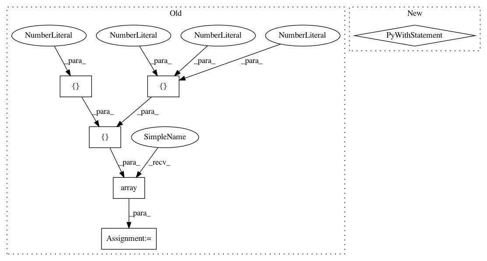

8202e627c7d7897728d824c84a6d479ca84a9098,tests/keras/backend/backend_test.py,TestBackend,test_slice,#TestBackend#,1756
Before Change
[2, 1, 3]
])
def test_slice(self, x_size):
npt = np.array([[[1, 1, 1], [2, 2, 2]],
[[3, 3, 3], [4, 4, 4]],
[[5, 5, 5], [6, 6, 6]]])
x_start = [1, 0, 0]
tft = K.constant(npt)
test_input = K.eval(K.slice(tft, x_start, x_size))
expected = KNP.slice(npt, x_start, x_size)
assert np.allclose(test_input, expected)
@pytest.mark.skipif(K.backend() != "tensorflow",
After Change
def test_slice(self, shape, start, size):
check_single_tensor_operation("slice", shape, WITH_NP,
start=start, size=size)
with pytest.raises(ValueError):
K.slice(K.variable(np.random.random(shape)),
start=[1, 0, 0, 0], size=size)
@pytest.mark.skipif(K.backend() != "tensorflow",
reason="Beam search is only implemented with "
"the TensorFlow backend.")
def test_ctc_decode_beam_search(self):
In pattern: SUPERPATTERN
Frequency: 3
Non-data size: 6
Instances
Project Name: keras-team/keras
Commit Name: 8202e627c7d7897728d824c84a6d479ca84a9098
Time: 2019-03-25
Author: me@taehoonlee.com
File Name: tests/keras/backend/backend_test.py
Class Name: TestBackend
Method Name: test_slice
Project Name: pandas-dev/pandas
Commit Name: ff628b17ccfcaf14ceefeb438aafa56d3849937c
Time: 2021-01-19
Author: jorisvandenbossche@gmail.com
File Name: pandas/tests/frame/test_ufunc.py
Class Name:
Method Name: test_binary_input_aligns_columns
Project Name: pandas-dev/pandas
Commit Name: ff628b17ccfcaf14ceefeb438aafa56d3849937c
Time: 2021-01-19
Author: jorisvandenbossche@gmail.com
File Name: pandas/tests/frame/test_ufunc.py
Class Name:
Method Name: test_binary_input_aligns_index